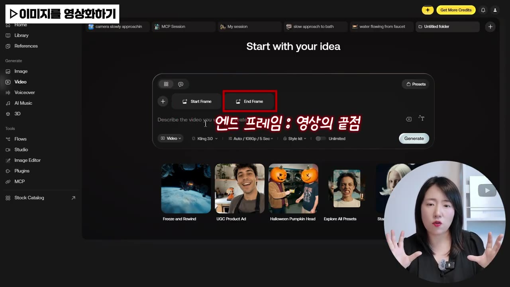
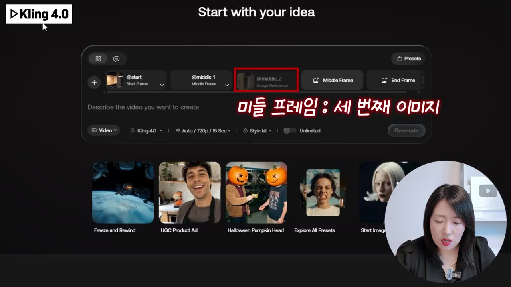
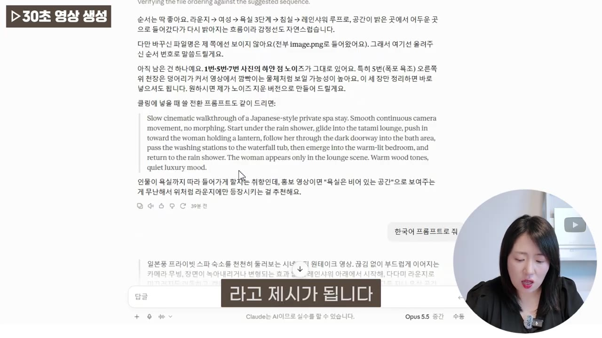
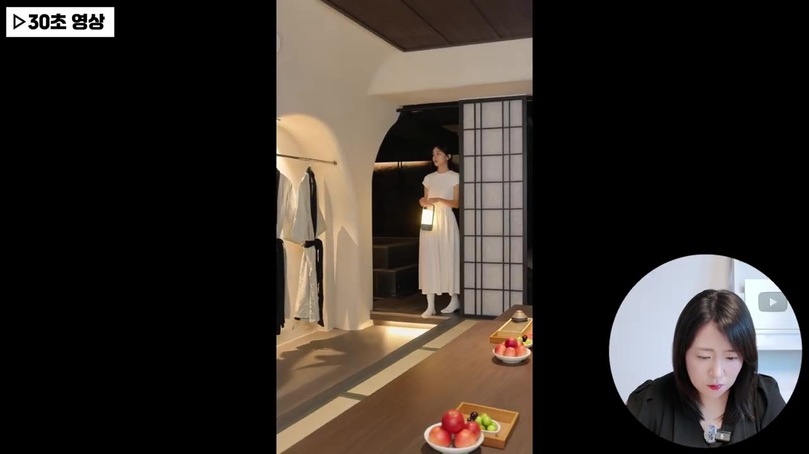

AI야, 이 장면은 여기에 넣어줘! 원하는 순간에 원하는 장면 넣기｜Artlist × Kling 4.0
🎙️ 자막 대신 영상 음성을 받아써서 정리 (ko (음성 받아쓰기·GPU))
▶ 원본 영상 보기한눈에 보기
- Artlist에서 새로 나온 Kling 4.0을 쓰면 사진 여러 장(최대 10장)을 순서대로 올려 30초짜리 영상 한 편을 한 번에 만들 수 있다.
- 기존에는 사진마다 영상을 따로 만들어 캡컷·프리미어 프로에서 이어 붙였지만, Kling 4.0은 Start·Middle·End Frame으로 장면 순서를 직접 정해 그 과정을 없앤다.
- 프롬프트는 이미지 순서대로 장면 흐름을 쓰면 되고, GPT나 Claude에 사진과 순서를 보여 주고 "이 순서로 영상 잘 나올까?"라고 물어 받은 프롬프트를 써도 된다.
- 30초·1080 화질까지 생성할 수 있고 배경음·음악·목소리까지 함께 나온다. 영상 속 예시는 생성하는 데 1분 정도 걸렸다.
이런 분께 도움이 됩니다
- 가게·숙소·여행지·기업 홍보용 숏폼을 사진만 가지고 만들고 싶은 분
- 스토리보드나 이미지 콘티로 장면 순서를 미리 정해 두고 AI 영상을 그대로 만들고 싶은 광고·영상 제작자
핵심 내용
지금까지 사진으로 홍보 영상을 만든 방법 (0:30)
예전에는 업체에 직접 가서 촬영했지만, 요즘은 사진만 받아서 한 장씩 영상으로 만든 뒤 이어 붙이는 방식으로 숙소·기업 홍보 영상을 만든다.
- 사진 준비
- 장면별 영상화
- 편집으로 잇기
- 1사진 준비
숙소라면 공간별 이미지를 모두 받아 둔다 (0:55)
- 2장면별 영상화
사진을 한 장씩 AI 비디오 도구에 넣어 짧은 영상으로 만든다 (1:10)
- 3편집으로 잇기
캡컷이나 프리미어 프로에서 영상들을 이어 붙여 홍보 영상 한 편을 완성한다 (1:21)
💡 Kling 4.0은 2·3단계를 한 번의 생성으로 합쳐 준다. 사진만 순서대로 올리면 영상 한 편이 바로 나온다.
Artlist에서 한 장씩 영상 만들기: 기존 방식 (2:06)
Artlist는 한 곳에서 AI 이미지·비디오·음악·보이스오버를 모두 만들 수 있는 서비스다. 기존 AI 비디오는 Start Frame(첫 장면)과 End Frame(마지막 장면)만 정할 수 있었다.

- 진행 순서: AI 비디오 → Start Frame에서 업로드 이미지 → 프롬프트 입력 → 비디오 모델 선택 → Generate
- 예시 프롬프트(숙소 욕실 사진 한 장): "원본 사진을 기반으로 한 사실적인 숙소 영상. 카메라가 현재 높이와 각도를 유지하면서 거물탕(자막상 불분명)을 향해 아주 천천히 접근. 천장 샤워에서 떨어지는 기존 물줄기가 자연스럽게 흐르는 5초짜리 영상"
- 결과: 정지 사진이 바닥으로 물줄기가 떨어지는 영상으로 바뀌었다.
💡 사진의 디테일을 그대로 살려 영상으로 만들 수 있으니 다시 촬영하러 갈 필요가 없다. 다만 장면마다 따로 만들어야 했다.
Kling 4.0의 새 기능: Middle Frame으로 최대 10장 (4:00)
- 위치: 비디오 화면 아래쪽 모델 선택 칸(기본값 Kling 3.0)을 All models로 바꾸고 Kling을 고르면 Kling 도구 목록이 나온다.
- All models 목록에는 시젠스, 제미나이, 옴니 등이 있다(자막 표기 그대로).
- Kling 목록: 3.0(기존), 4.0(이번에 새로 나옴), O3(이미지 생성 도구)
- 4.0을 고르면 Start·End Frame 사이에 Middle Frame이 생겨 이미지를 모두 10장까지 넣을 수 있다. 넣은 이미지의 모습은 그대로 유지된 채 영상 하나로 이어진다.

💡 광고주와 함께 짠 스토리보드 이미지를 그대로 넣으면 그 콘티대로 영상이 나온다.
이미지 순서대로 프롬프트 쓰기: GPT·Claude 활용 (5:43)
영상 속 예시는 사진 8장으로 만든 30초 영상이다. 프롬프트는 이미지를 넣은 순서대로 장면이 이어지게 쓴다.
- 예시 프롬프트(요지): "일본풍 프라이빗 스파 숙소를 천천히 둘러보는 시네마틱 원테이크 영상. 끊김 없이 이어지게, 장면 변형 효과 없이. 처음에는 레인 샤워 아래에서 시작해 다다미 라운지로 미끄러지듯 이동하고, 랜턴을 든 여성에게 천천히 다가간 뒤 그녀 뒤의 어두운 입구를 지나 욕실 공간으로 들어간다…"
- 프롬프트 만드는 법: GPT나 Claude 아무거나 쓰면 된다. 이미지를 올리고 "이렇게 순서하면 어때?"라고 물으면 AI가 순서를 평가하고, 영상으로 만들 때 아쉬울 수 있는 점을 짚은 뒤 프롬프트를 제안해 준다. 영상에서는 한국어 프롬프트를 받아 그대로 썼다.

- 설정: 화면 아래에서 비율과 길이(초)를 정한다. Kling 4.0은 최대 30초, 화질은 1080까지 된다.
- 30초보다 긴 영상은 30초씩 나눠서 만든다. AI도 "이미지끼리 차이가 너무 크면 파트를 나눠 생성하라"고 조언했다.
결과: 숙소 홍보 숏폼 (7:28)
배치 순서는 다음과 같다. 물이 있는 공간이 이 숙소의 핵심이라 앞과 뒤에 배치했다.
- 레인 샤워
- 다다미 방
- 랜턴 든 여성
- 세신 공간
- 욕조
- 객실
- 탕 욕조
- 1레인 샤워
빗소리처럼 물이 내리는 장면에서 시작
- 2다다미 방
라운지 공간으로 이동
- 3랜턴 든 여성
인물 등장
- 4세신 공간
때 미는 곳
- 5욕조
욕조 공간
- 6객실
방
- 7탕 욕조
마지막에 다시 물 공간으로 마무리

- 생성 시간: 약 1분
- 영상을 따로 만들어 편집하고 효과음·음악까지 넣으려면 오래 걸리던 작업이 한 번에 끝났다.
💡 장면을 하나씩 만들어 편집하던 작업이 생성 한 번으로 줄어든다.
두 번째 예시: 누군가의 하루 같은 CF (8:46)
같은 여성이 지하철을 타고, 가방을 내려놓고, 강의를 하는 이미지들을 넣고 "30초로 만들어줘"라고 해서 생성했다. 결과 영상에서는 모든 장면에 같은 인물이 이어서 나오고, 끝에 "오늘도 수고했어"라는 목소리까지 생성됐다.
- 숏폼뿐 아니라 롱폼도 가능하다고 했고, 배경음·음악·목소리가 함께 나온다.
- 30초에 10장이 들어가니 약 3초 단위로 장면을 지정할 수 있다. 영상에서는 이 점을 가장 큰 장점으로 꼽았다.
따라 해보기
준비물
- Artlist 계정과 Kling 4.0을 쓸 수 있는 요금제(영상 설명에 따르면 연간 플랜에 일부 AI 모델 무제한 혜택이 있으며, 정확한 조건은 링크에서 확인)
- 영상으로 만들 사진 최대 10장(예시는 8장), 장면 순서를 미리 정해 두기
- 프롬프트를 만들 때 쓸 ChatGPT 또는 Claude
- 소요 시간: 생성은 약 1분(영상 속 예시 기준), 준비와 프롬프트 작업 시간은 별도
단계별 방법
- 1사진 순서 정하기
보여 줄 장면 순서대로 사진을 정리한다. 강조하고 싶은 장면은 앞과 뒤에 둔다 (7:28)
- 2AI로 프롬프트 받기
GPT나 Claude에 사진을 순서대로 올리고 "이 순서대로 영상 만들면 잘 나올 것 같아?"라고 묻는다. 괜찮다는 답이 나오면 프롬프트를 받는다(한국어로 요청해도 됨) (6:41)
- 3비디오 메뉴 열기
Artlist에서 AI 비디오(Video)로 들어간다 (4:00)
- 4모델 바꾸기
아래쪽 모델 칸(Kling 3.0)을 All models → Kling → 4.0으로 바꾼다 (4:10)
- 5첫 이미지 넣기
Start Frame → 업로드 이미지로 첫 장면을 올린다 (4:57)
- 6중간 이미지 넣기
Middle Frame을 눌러 두 번째 장면을 올리고, Middle Frame을 다시 눌러 다음 장면을 올리는 식으로 반복한다 (5:00)
- 7마지막 이미지 넣기
마지막 사진은 End Frame에 올린다(전체 10장 이내) (5:38)
- 8프롬프트 입력
2단계에서 받은 프롬프트를 붙여 넣는다 (5:43)
- 9비율·길이 설정
아래쪽에서 비율과 초를 정한다(최대 30초, 1080까지) (6:55)
- 10생성
Generate를 누르고 결과를 확인한다(예시 약 1분) (3:04)
2단계에서 AI에게 보낼 질문 예시 (영상 내용을 바탕으로 정리)
(이미지를 순서대로 첨부)
이 순서대로 30초짜리 원테이크 홍보 영상을 Kling 4.0으로 만들려고 해. 이 순서로 하면 영상이 잘 나올 것 같아? 아쉬운 점이 있으면 알려 주고, 이미지 순서대로 장면이 이어지는 한국어 프롬프트를 써 줘.
따라 할 수 있는지 점검
- ✅ 바로 따라 할 수 있음: 사진 순서 정하기, AI에게 순서를 물어 프롬프트 받기, Start·Middle·End Frame에 이미지 올리기, 프롬프트 입력
- ⚠️ 3단계 「비디오 메뉴 열기」: Artlist 가입 방법과 Kling 4.0을 쓸 수 있는 요금제·크레딧이 영상에 나오지 않는다 → 설명란 링크에서 플랜별 모델 이용 조건을 확인한다. 유료 플랜이 필요할 수 있다.
- ⚠️ 4단계 「모델 바꾸기」: 4.0을 고른 뒤 "유지 모델(자막상 불분명)"을 누른다는 말이 있는데, 정확한 버튼 이름을 알 수 없다 → 영상 4:30 전후 화면에서 확인한다.
- ⚠️ 8단계 「프롬프트 입력」: 예시 프롬프트는 앞부분만 읽어 줘서 전문을 알 수 없다 → 영상 5:50 전후 화면에서 확인하거나 2단계 방식으로 직접 만든다.
- ⚠️ 9단계 「비율·길이 설정」: 예시 영상에 쓴 비율 값과 화질 선택 메뉴 위치가 나오지 않는다 → 숏폼이면 세로 비율을 고른다(보충). 영상 7:00 전후 화면을 참고한다.
- ❓ 처음엔 "8장을 준비했다"고 했지만, 결과 설명의 장면 배치(샤워→다다미→여성→세신→욕조→방→탕)는 7개로 들려 장수가 정확히 맞는지 확인이 필요하다.
확인 방법
- 올린 이미지들이 순서대로, 모습이 변하지 않은 채 이어지는지 본다.
- 장면이 바뀌는 곳에서 끊기거나 형태가 바뀌는 곳이 없는지 확인한다. 예시 프롬프트에 "끊김 없이, 장면 변형 효과 없이"를 넣은 이유다.
- 인물이 나오는 경우 모든 장면에서 같은 사람으로 보이는지 확인한다.
막히면
- 이미지끼리 분위기나 공간 차이가 너무 크면 결과가 어색해진다. 이럴 때는 파트를 나눠 따로 생성한다(AI가 해 준 조언).
- 30초보다 긴 영상이 필요하면 30초씩 나눠 만든다.
- 이미지는 10장까지만 들어간다.
기억할 숫자·인용
- 이미지 최대 10장(Start + Middle + End Frame)
- 영상 길이 최대 30초, 화질 1080까지
- 30초에 10장을 넣으면 장면은 약 3초 단위
- 생성 시간: 약 1분(영상 속 숙소 예시)
- 촬영 시점: Kling 4.0이 "나온 지 10시간도 안 된" 때
- 기존 단일 이미지 예시는 5초 영상
생각해볼 점
- (영상 내용) 결과물은 제작자가 고른 성공 사례 두 개뿐이다. (내 의견) 이미지 스타일이 제각각인 사진으로도 이렇게 자연스럽게 나올지는 직접 해 봐야 안다.
- (내 의견) Artlist 제휴 링크가 들어간 영상이다. 같은 Kling 4.0을 다른 플랫폼에서 쓸 때와 비용·조건을 비교해 보는 것이 좋다.
- (내 의견) 실제 숙소·업체 사진을 AI로 영상화하면 실제와 다른 움직임(물줄기, 인물 등)이 생길 수 있다. 홍보물로 쓸 때는 과장 광고가 되지 않는지 확인이 필요하다.
바로 해볼 일
- 홍보하고 싶은 장소나 제품 사진 5~10장을 골라 보여 줄 순서대로 파일 이름에 번호를 붙이기
- ChatGPT나 Claude에 사진을 순서대로 올리고 "이 순서로 30초 원테이크 영상 잘 나올까? 프롬프트 써 줘"라고 물어보기
- Artlist 설명란 링크에서 Kling 4.0을 쓸 수 있는 플랜과 크레딧 조건 확인하기